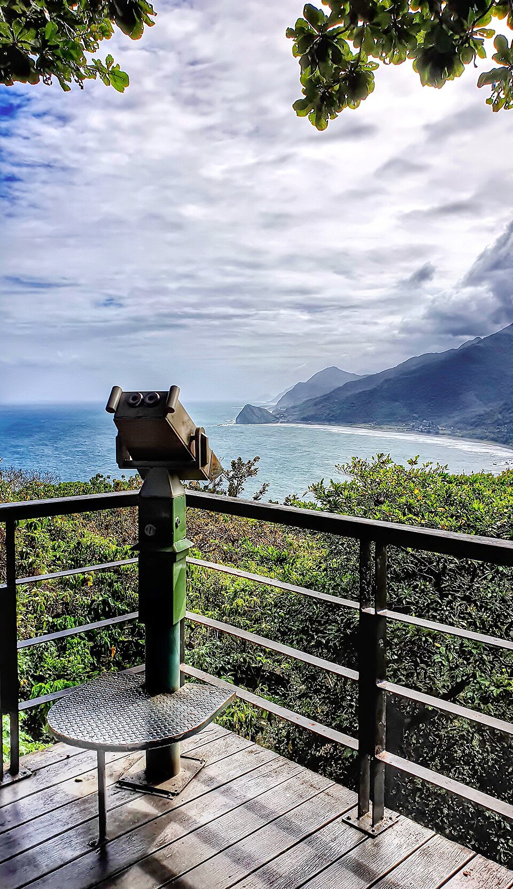

← 回總行程
芭崎觀景台
Day 2 ・ 11/15(日) ・ 預計 約 12:15 ・ 停留 15 分

圖片參考:Wikimedia Commons ・ Mk2010 ・ CC BY-SA 4.0 ・ 來源
花蓮豐濱段高處的觀景點,可以俯瞰蜿蜒的海岸線與太平洋,是台 11 線北段很有代表性的視野。
遊玩重點
- 高處俯瞰海岸線與太平洋
- 台 11 線北段的開闊視野
- 午餐前的最後一站
建議店家與預估費用
- 芭崎觀景台:看海景(免費)
- 附近小店:飲料、小點心(約 NT$50~100)
本站預估:約 NT$0~100 / 人
店家與費用是依一般行情推估,不是即時報價。出發前請用 Google 地圖確認營業時間與價格。
騎士小提醒
- 這站是彈性景點,午餐前的最後一站。
- 位置與停車方便程度,請出發前用地圖確認。
- 從這裡到花蓮市區約 1 小時,午餐預計 13:30 前後。